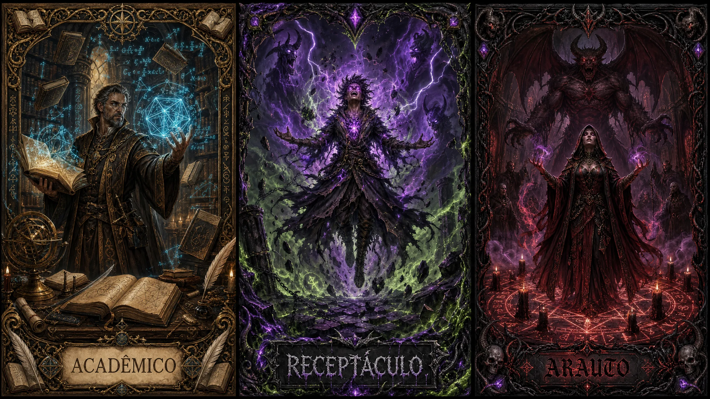

Teurgo

"Enquanto outros confiam no aço e na carne, você aprendeu a ouvir o sussurro do outro lado. As forças primordiais fluem através de você - não porque você as comanda, mas porque elas permitem que você as canalize. Alguns chamam isso de magia. Outros, de loucura. Você chama de estudo."
A verdade é que ninguém sabe de onde vem o poder que você manipula. Os textos antigos falam de deuses, de planos além da percepção mortal, de uma Grande Árvore que conecta todos os mundos. Você leu esses textos. Você questionou cada linha. E quanto mais aprende, mais percebe que as respostas geram apenas mais perguntas. O Éter que você manipula cobra seu preço. Cada conjuração é um diálogo com algo que você não compreende - e que talvez não devesse compreender. Mas você continua. Porque o conhecimento, mesmo o proibido, é a única luz na escuridão.
⚔️ Treinamento
Você começa treinado em: Armas Místicas, Místico, Conhecimento
Escolha (1 + Mod. Inteligência) perícias: Religião, Vontade, Percepção, Medicina, Investigação
📊 Status Iniciais
❤️ Saúde
10 + (3 × Nível) + (Mod.CON × Nível)
⚡ Stamina
8 + (3 × Nível) + (Mod.FOR OU Mod.DES × Nível)
✨ Éter
6 + (9 × Nível) + (Mod.INT OU Mod.SAB × Nível)
🛡️ Evasão Ativa
10 + Mod.Des + Prof.Defender
🛡️ Evasão Passiva
10 + Mod. Destreza
📈 Progressão
| Nível | Conteúdo |
|---|---|
| 1 | 4 Técnicas, 2 Escolas do Primórdio |
| 2 | 5 Técnicas, Técnica de Ramo (Tier 1) |
| 3 | 6 Técnicas, 1 Marca, 3 Escolas do Primórdio |
| 4 | 7 Técnicas, Técnica de Ramo (Tier 1, 2), 2 Marcas |
| 5 | 8 Técnicas, Técnica de Ramo (Tier 1, 2 e 3), 3 Marcas, 5 Escolas do Primórdio |
📚 Escolas do Primórdio
✨ Escolas do Primórdio
O Teurgo não domina toda a magia - ele se especializa em Escolas que representam diferentes manifestações do Éter. Cada escola requer um Foco específico para ser conjurada.
Você estudou 2 Escolas, +1 no nível 3 e +2 no nível 5
Escolha 1+MOD. INT ou SAB, magias de nível 1 no primeiro nível.
⚡ Técnicas
Toda classe possui técnicas, você pode reatribuí-las livremente ao realizar um descanso longo. Você possui 3 Técnicas + Nível.
Éter Residual
Ao conjurar uma magia contida e seu custo final for ≤1, adicione uma modulação grátis.
Reserva Oculta
Ao chegar a 0 de Éter, pode conjurar magias pagando em Saúde (2:1). 2 Saúde = 1 Éter. A restrição da condição Oco (não canalizar) não se aplica enquanto você pagar magias com Saúde por esta técnica.
Foco Duplo
Você pode empunhar dois focos ao mesmo tempo, alternando escolas sem trocar de equipamento.
Força Primordial
Suas magias de dano ignoram 1 de Ae. Adicionalmente, causam 1 de dano Primordial adicional.
Transbordar Controlado
Ao usar intensidade Transbordante, rola Vontade com +2.
Linguagem Estranha
Você consegue entender de maneira básica e leiga, o idioma Abissal.
Encadeamento
Ao conjurar uma magia, pode conjurar outra se puder pagar pelas ações. A segunda custa Éter adicional = número de ações dela.
Respiração Primordial
Você medita brevemente, restaurando suas forças. Recuperando (nível)d4 Éter. Máx. 1x/Descanso Curto.
Imbuir Magia
Pode preparar uma magia em um objeto gastando o éter de antemão, designando um gatilho de ativação específico, como impacto, proximidade, ativação remota. Você pode ativar a magia a qualquer momento com uma reação.
Canalização Eficiente
Reduza o custo de uma magia em 1 Éter.
Sentir Magia
Você sente a presença de magia ou efeitos primordiais em até 9m. Não consegue diagnosticar características, apenas fica ciente.
Conjuração Furtiva
Pode conjurar magias de forma silenciosa, sem componente verbal, sonoro e visual. Role Furtividade vs Percepção/Místico. Se o alvo receber qualquer tipo de dano ele percebe a magia.
Marca do Primórdio
Ao acertar com magia de dano, pode marcar o alvo. Vontade contra sua CD ou magias de dano recebem +1 dado de dano contra ele. Rola novamente a cada turno.
Concentração
Pode canalizar magia com 1 ação adicional. Adiciona +1 dado de dano ou uma modulação grátis.
Barreira Instintiva
Ao receber dano, pode gastar Éter como ação livre para reduzir dano. 1 Éter = 1d4 de dano reduzido, 2 Éter = 2d4 de dano reduzido… (Max. Éter gasto = Nível)
🌿 Ramos
Os ramos são caminhos, características únicas do seu personagem. Diferente das técnicas, são irreversíveis.
Marcas de Ramo: Que construiu ao longo da sua vida, moldando sua PERSONALIDADE.
Técnicas de Ramo: Que aprendeu ao longo do seu treinamento definindo seu ESTILO DE AGIR.
É extremamente aceitável que você misture os 3 ramos. Ao longo da criação você escolherá: 3 Marcas e 6 Técnicas de Ramo (3 no Tier 1, ao chegar ao nível 2; 2 no Tier 2, no nível 4; e 1 Ultimate no Tier 3, no nível 5).
📖 Ramo do Acadêmico
A magia nunca foi mistério para você - foi problema a ser resolvido. Enquanto outros temem o desconhecido, você o disseca, cataloga e domina. Cada fenômeno tem uma explicação. Cada força segue regras. Seus grimórios estão cheios de anotações, teoremas e correções. O que chamam de milagre, você chama de ciência ainda não compreendida.
🌀 Ramo do Receptáculo
Você não escolheu a magia. Ela escolheu você. Desde jovem, o plano místico sussurra no limite da sua percepção - vozes sem forma, visões sem contexto, poder sem explicação. Você aprendeu a se abrir, a se esvaziar, a deixar que o outro lado flua através de você. É perigoso. É intoxicante. E você não consegue mais parar.
🔱 Ramo do Arauto
O poder verdadeiro não é tomado - é negociado. Você entendeu isso cedo. Através de rituais meticulosos, círculos perfeitamente traçados e palavras pronunciadas na ordem exata, você firma acordos com forças que outros nem sabem que existem. Cada pacto tem um preço. Cada cerimônia deixa uma marca. Mas o que você recebe em troca... vale cada cicatriz.
🔥 Marcas de Ramo
📖 Marcas do Acadêmico
O Duelista
Você tem +2 em Místico, Vontade e Reflexo contra outros Teurgos ou criaturas que conjuram magias.
Ao acertar uma criatura ou conjurador com uma magia de dano, você rouba 1d4 de Éter dele.
Colecionador de Teoremas
Para cada 5 magias diferentes que você presenciou sendo conjuradas e anotou em seu grimório, ganha +1 permanente em Místico. Ao chegar em +5, essa habilidade fica supérflua.
Ao suceder em um teste de Místico para identificar corretamente uma magia (escola, nível e efeito), recupera 1 de Stamina.
🌀 Marcas do Receptáculo
Cicatrizes do Fluxo
Para cada 5 magias que você conjurou com Intensidade Transbordante com sucesso, ganha +1 permanente em Vontade. Ao chegar em +5, essa habilidade fica supérflua.
Ao falhar no teste de Vontade de uma magia Transbordante, você conjura a magia porém na sua versão contida, então perde o éter pela falha.
Casca Rachada
Você pode ficar Oco como uma ação. Isso significa que você perde todo seu Éter, que fica em 0.
Ao estar Oco, seu limite máximo de Éter negativo dobra, além disso, você tem +2 de Vontade enquanto nessa condição.
🔱 Marcas do Arauto
Devoto
Requer Arauto Tier 1
Para cada 3 vezes que você cumpriu uma exigência do Preço do Pacto do seu Patrono, ganha +1 permanente em Místico. Ao chegar em +5, essa habilidade fica supérflua.
Adicionalmente, você ganha 50% mais da recompensa ao cumprir uma barganha primordial.
Porta-Voz
Você pode servir como canal de comunicação para seu Patrono - ele pode falar através de você (com sua permissão).
+2 em Interação Social (Intimidação) quando invoca o nome/autoridade do seu Patrono.
1x/descanso longo: Pode fazer uma pergunta direta ao seu Patrono.
⚡ Técnicas de Ramo
Tier 1
Nível 2+📖 Acadêmico
Grimório Arcano
PassivaVocê possui um livro onde armazena grande parte do seu conhecimento arcano, lá estão seus estudos junto com suas magias conhecidas. Essa técnica substitui a fórmula nível 1 de magias disponíveis.
- Escolha 3+Mod.Int magias em escolas que você é especializado e +1 para cada nível subsequente.
- Você só pode escolher magias iguais ou abaixo do seu nível.
- Pode estudar e reordenar suas magias em um descanso longo.
Tese Arcana
Passiva, 2 StaminaEscolha uma magia que você conhece. Ela se torna sua Tese. Você pode trocar a magia escolhida em um descanso longo.
- Ao canalizar essa magia, você pode gastar 2 de Stamina para que sua Tese Arcana possua uma modulação grátis e sua intensidade seja 1 nível acima do conjurado.
Recuperação Primordial
3 Ações, X StaminaVocê gasta 3 ações para revitalizar sua relação com o Místico.
Você compra pontos de Éter gastando pontos de Stamina, com uma proporção de 2:1. (2 Stamina = 1 Éter)
🌀 Receptáculo
Canalizador Inato
PassivaVocê possui magias gravadas em sua essência, padrões internos que atuam da sua essência para canalizar magia. Essa técnica substitui a fórmula nível 1 de magias disponíveis.
- Escolha 2+Mod. Sabedoria magias em escolas que você é especializado e +1 para cada nível subsequente. Você só pode escolher magias iguais ou abaixo do seu Nível.
- Essas magias são permanentes e não podem ser trocadas.
- Você recebe Treinamento adicional na perícia Místico.
Natureza Caótica
Ação Livre, 2 StaminaAo conjurar qualquer magia, como ação livre gaste 2 de Stamina e role 1d6:
- 1-2: Perde +1d4 Éter e magia perde 1 de intensidade. Se contida, falha.
- 3-4: A magia é canalizada normalmente.
- 5-6: Magia ganha +1 de intensidade ou +1 dado de efeito/+50% duração.
Canalização Visceral
PassivaPode conjurar qualquer magia sem o Foco apropriado, mas ao fazer isso:
- Recebe dano Primordial em Saúde igual ao nível da magia × 2
- Este dano não pode ser reduzido por Armaduras ou Resistências
🔱 Arauto
Patrono Primordial
Passiva"Você firmou um pacto com algo além da compreensão mortal."
Escolha uma entidade primordial como seu Patrono. Esta escolha é permanente.
🌳 A Grande Árvore
✅ Benefícios:
- Magias de alteração sempre têm intensidade +1
- 1x/descanso longo: beber Seiva, recupera 1d6 Éter e remove condição mental (exceto Oco)
- Sente presença de seres malignos e usuários de seiva em 18m
⚠️ Preço do Pacto:
- Defenda a Grande Árvore de quem quer destruí-la
- Propague os benefícios do uso de Seiva
⛓️ O Trancafiado
✅ Benefícios:
- Magias de destruição causam +2 dano base
- 1x/descanso longo: dano dobrado, mas recebe metade em Primordial
- Pode ver e falar com mortos de até 1 hora atrás
⚠️ Preço do Pacto:
- Tente descobrir informações sobre o abismo
- Mate almas pecadoras e espalhe a causa
- Se oponha a todos os deuses
🚪 O Limiar
✅ Benefícios:
- Magias de abjuração custam -1 Éter
- 1x/descanso longo, como reação: anule completamente uma magia ou efeito mágico ≤ seu nível, antes dela ser canalizada ou após sua materialização
- Sabe quando algo cruza entre planos em 30m
⚠️ Preço do Pacto:
- Não permita canalização desnecessária de magia
- Puna quem exponha o plano místico
- Proteja o plano místico a todo custo
Magias Pactuadas
PassivaVocê negociou com entidades primordiais temidas por outros. Eles fornecem uma fração de sua essência, por um custo. Essa técnica substitui a fórmula nível 1 de magias disponíveis.
- Escolha 1+Mod. Inteligência magias em escolas que você é especializado e +1 para cada nível subsequente. Você só pode escolher magias iguais ou abaixo do seu nível.
- Trocar requer ritual de ao menos 1 hora e pagamento (componentes, Sins, sacrifício).
- Magia Pactuada em Intensidade Contida custa 0 de Éter.
Barganha Primordial
1 Ação1x/descanso longo: Invoque as forças primordiais e proponha uma barganha:
Você pede: Recuperar 1d6 Éter, modulação grátis, informação oculta, outro benefício...
As forças pedem: Perda de Saúde/Stamina/Éter, componente, tarefa futura, outro preço...
Tier 2
Nível 4+📖 Acadêmico
Maestria Arcana
PassivaEscolha uma escola do primórdio que você é especializado. Você se torna mestre nela. Magias desta escola:
- Custam -1 Éter
- Modulações dessa escola custam -1 Éter
Pode trocar a escola escolhida em um descanso longo.
Eterno Aprendiz
Reação, 5 StaminaAo presenciar uma magia sendo conjurada, pode estudá-la rapidamente:
- Sabe exatamente qual magia é, sua intensidade e modulações
- Ganha +2 em testes de resistência ou para dissipar
- Se especializado na escola, pode tentar aprendê-la em descanso longo (Místico CD 15 + Nível × 2). Você só pode aprender 1 magia por descanso longo.
🌀 Receptáculo
Surto Primordial
Ação Livre, 2 StaminaDeclare antes de conjurar uma magia:
- A magia é canalizada com intensidade Transbordante sem custo adicional de Éter.
- Porém, o teste de Vontade é CD 18 (ao invés de 15).
Êxtase Destrutivo
Passiva, 3 Ações, 50% ÉterComo 3 ações, você assume a forma do Êxtase, gastando imediatamente 50% do seu éter máximo. Ao longo de 10 minutos, com 3 ações, pode restaurar 50% do éter máximo.
Ao ter 50% de Éter ou abaixo:
- Destruição: +1d6 dano
- Abjuração: +50% efeito ou duração
- Alteração: +1 alvo ou +50% duração
- Conhecimento: +50% alcance ou 1 modulação grátis
Ao ter 0 de Éter ou abaixo:
- Destruição: +2d6 dano
- Abjuração: +100% de efeito ou duração e não podem ser dissipadas
- Alteração: +100% de duração e afetam +2 alvos adicionais
- Conhecimento: Alcance/Área dobrado e 1 pergunta adicional ao mestre sobre o que detectou
🔱 Arauto
Ritual
10 minutos, 5 StaminaVocê pode ritualizar uma magia, aumentando:
- Duração: 6 horas (independente da original)
- Alvos: Todos presentes no ritual
O custo de éter é pago normalmente. Dura até 6 horas ou até você estar Oco ou Morrendo. Apenas 1 Ritual por vez.
Invocar Ser
2 Ações, 3 StaminaVocê invoca uma criatura mística que te obedece. Se possui patrono, escolha a criatura respectiva dele:
🌳 Grutto (Grande Árvore)
Ataque: 1d20+Sab. Seiva Dourada: 1d20+Sab contra Reflexo de todos em 3m. Falha: 1d10+Int de dano Psíquico. Movimento: 6m.
⛓️ Mortto (Trancafiado)
Ataque: 1d20+Sab. Atormentar: 1d20+Sab contra Vontade de um alvo. Falha: fica Amedrontado por 1 turno. Movimento: 9m.
🚪 Terro (Limiar)
Ataque: 1d20+Sab. Chamar Atenção: 1d20+Sab contra Vontade de um alvo. Falha: obrigado a atacar Terro na próxima rodada ao menos 1 vez. Movimento: 6m.
✨ Crikko (Genérico)
Ataque: 1d20+Sab. Movimento: 7,5 m. Um ser místico pequeno aleatório aparece.
O Ser age no seu turno com 2 ações. Dura 10 minutos no nível 4, e tempo indefinido no nível 5, até ser dispensado ou destruído. Você pode invocar 1 ser no nível 4 e 2 seres no nível 5. Ao ser destruído: 1d4 dano Primordial em você.
Tier 3 — Ultimates
Nível 5 • 1x/Dia📖 Teorema Absoluto
Você atinge a compreensão perfeita das forças primordiais. Por um breve momento, você não apenas entende a magia - você a controla absolutamente.
Sua próxima magia: Intensidade Transbordante sem custo/teste, todas as modulações custam 0, dano/cura máximos, alvos de controle rolam com desvantagem, e se for de conhecimento você recebe todo o conhecimento que o plano místico possui.
Escolha uma magia sendo conjurada por outra criatura: exija um teste de Vontade contra sua CD + 5. Em caso de falha, o efeito é completamente anulado (qualquer nível), efeitos constantes suprimidos por 1 hora, criaturas invocadas banidas instantaneamente, conjurador fica atordoado por 1 rodada.
🌀 Receptáculo Perfeito
Você se abre completamente para as forças do outro lado. Por um momento, você é um canal puro para o primórdio. Duração: 3 rodadas.
✨ Energia Pura
- Todas as suas magias têm intensidade +1
- Nova intensidade: Transbordante+ (+1 dado de efeito além do normal)
♾️ Canalização Infinita
- Ao conjurar uma magia, conjure outra de graça com intensidade Normal
- Você pode conjurar mais de uma magia por rodada
- Pode conjurar magias mesmo estando Oco
⚡ Receptáculo Instável
Você está no ápice do seu poder e ele é extremamente custoso sobre seu corpo. Ao chegar em 50% de éter máximo nos negativos, você morre instantaneamente e explode em energia, causando 4d10+15 de dano Primordial a todos os alvos em até 9 m.
💀 O Custo
Ao ativar: você fica com EXATAMENTE 50% de éter (arredondado para baixo).
Ao decidir finalizar ou ao fim das 3 rodadas: Se Oco, role Vontade CD 15. Falha = 2d8+5 dano Primordial; se entrar em Morrendo: morte instantânea + explosão 4d10+15 Primordial em 9m; em caso de sucesso ou de não entrar em Morrendo, fica com 0 de éter e Exausto 1. Caso contrário (não Oco), fica Exausto 1.
🔱 Manifestação do Patrono
Você invoca uma fração verdadeira do seu patrono. O mundo treme enquanto seu patrono se materializa.
🌳 A Grande Árvore
Área: 12m raio | Duração: 3 Rodadas
Instantâneo: Aliados são imunes a condições mentais e curados 3d8+Int, condições removidas (exceto Oco). Inimigos ficam em Terreno Difícil e devem passar em Fortitude CD ou ficam Enraizados e Envenenados.
Contínuo: Aliados regeneram 1d8/turno, +2 em todos os testes. Inimigos: terreno difícil, -2 em todos os testes.
⛓️ O Trancafiado
Área: 18m visão | Duração: Instantâneo + 3 rodadas
Instantâneo: 4d10+Int dano Primordial. Criaturas a 0 HP têm almas arrastadas (não ressuscitam). Vontade CD 18 ou Amedrontados.
Contínuo: Toda criatura inimiga em até 18m deve passar em Reflexo todo turno ou fica Enraizada pelas correntes, recebendo 2d6 de dano Primordial por turno.
🚪 O Limiar
Área: 12m raio | Duração: 1 Rodada
Instantâneo: Todas as magias ativas anuladas, criaturas invocadas banidas permanentemente, ninguém (exceto você e aliados) pode conjurar por 2 rodadas. Escolha até 3 criaturas: Vontade ou Banidas para o espaço entre planos por até 1 minuto (falha) ou permanentemente (falha crítica).
Contínuo: Criaturas escolhidas devem passar Vontade CD 20 para conjurar até fim do combate.
🌀 Genérico
Para Teurgos sem Patrono definido. O primórdio puro se manifesta — caótico, devastador, imprevisível.
Área: 12m raio | Duração: Instantâneo + efeito caótico
Instantâneo: Explosão de energia primordial: todas as criaturas na área (exceto você) recebem 4d8+Int de dano Primordial, Fortitude CD 15 reduz à metade.
Efeito Caótico (role 1d6):
- Distorção Temporal: você ganha 2 ações adicionais neste turno.
- Drenagem: você recupera Éter igual a metade do dano total causado.
- Instabilidade: a área vira terreno difícil por 1 minuto (1d6 Primordial para quem entrar).
- Ressonância: sua próxima magia é automaticamente Transbordante, sem custo.
- Colapso: todas as criaturas na área ficam Cegas e Surdas por 1 rodada.
- Tiro no Pé: o efeito também te atinge — você recebe metade do dano causado, mas recupera toda a sua Stamina.
💀 O Preço
A Grande Árvore: Alucinações da Seiva parecem te direcionar para algum lugar; a Árvore clama pela sua presença, retirando seus poderes ao desobedecer as alucinações.
O Trancafiado: Ele sussurra a localização exata do abismo; você não tem mais desculpas, deve libertá-lo ou perderá seus poderes.
O Limiar: Ele exige que você o auxilie em breve, ajudando-o a equilibrar o plano místico; a localização de um portal para o plano místico é sussurrada em seus ouvidos. Ao negar seu destino, seus poderes vão se esvaindo.